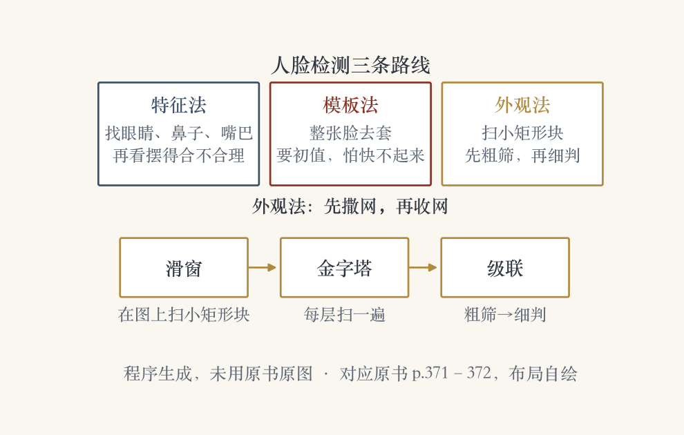
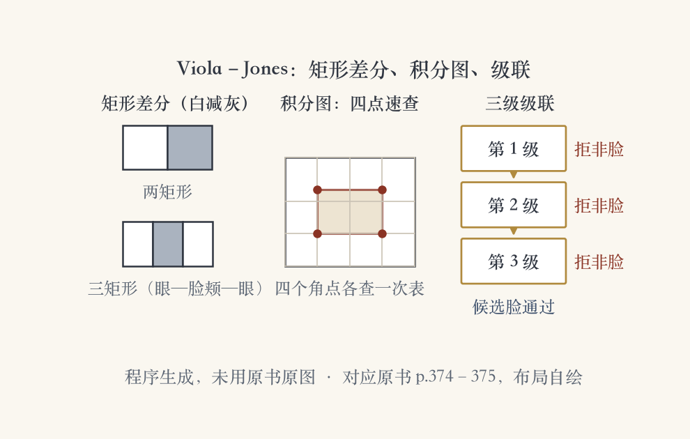
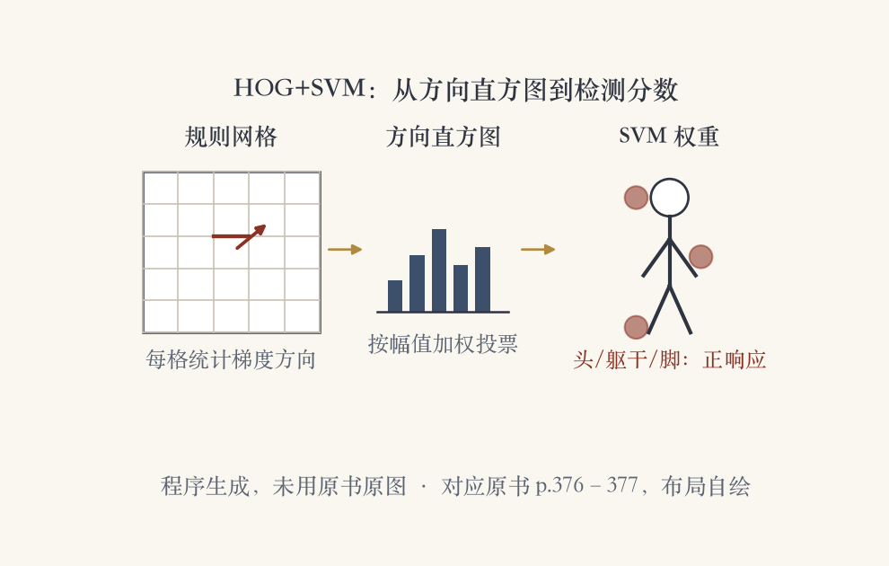

开场 · 对象检测
对象检测：先找位置再认人
- 识别回答“是谁”，检测先回答“在哪、多大”。
- 最笨的办法：每个可能的子窗口都跑一遍识别。
- 又慢又容易错，所以要造专门的检测器。
- 本集看人脸检测、行人检测，最后交棒给多类检测。
依据：原书第 370 页
本集三站
人脸检测：从特征到级联
行人检测：HOG 与部件模型
下一集：通用对象检测
找脸 · 三分类法
找脸，先定位置和大小
- 认脸之前，先要知道脸在哪、多大。
- 逐像素、逐尺度地跑识别，实际太慢。
- 人脸检测分成三派：特征法、模板法、外观法。
- 三派的区别在于怎么表示一张脸。
依据：原书第 371 页
三派一句话
特征法：找五官，再看排布
模板法：拿整张脸去套
外观法：分类器判断像不像脸
三条路线 · 外观法流水线
三条路线各有脾气
- 特征法：先找眼睛、鼻子、嘴巴，再查排布。
- 模板法：能应付姿态和表情，但初始位置要好。
- 外观法：扫小矩形块，先粗筛再级联细判。
- 为对付尺度，还要建图像金字塔，每层扫一遍。
依据：原书第 371–372 页

人脸检测三条路线与外观法流水线：特征法、模板法、外观法对照｜程序生成，未用教材或论文原图
最早两套外观法 · 数据增强
教它认脸，也教它认非脸
- 最早两套外观法：Sung–Poggio 与 Rowley。
- 收集标注好的脸块，也收集确定没脸的块。
- 脸图做镜像、旋转、缩放、平移，造更多样本。
- 图 6.20：57 个真阳性里混着 1 个假阳性。
依据：原书第 372 页
训练样本
正样本：标注好的脸块
负样本：航拍图、植被图等
增强：镜像、旋转、缩放、平移
聚类与 PCA
十二簇，先量距离再判断
- 脸块和非脸块各聚六簇，共十二簇。
- 每簇拟合一个 PCA 子空间。
- DIFS 和 DFFS 各算一条马氏距离。
- 十二簇共二十四条，送进多层感知器。
依据：原书第 373 页
两种度量
DIFS：投进子空间后离中心多远
DFFS：投影丢下的误差多大
输出交给多层感知器判断
Rowley 神经网络
二十乘二十，直接喂网络
- 不用聚类，直接把 20×20 灰度块喂给网络。
- 大小不一的手工感受野，同时抓大结构和小细节。
- 金字塔每层的重叠块都输出“这里是脸”的概率。
- 再加一个合并网络，把重叠检测揉成一个。
依据：原书第 373 页
两个网络
检测网络：逐块给出概率
合并网络：重叠框合成一个
手工感受野：窗口大小由人设计
支持向量机
SVM：分开，还要分得宽
- Osuna 等人用 SVM 分类同样的预处理块。
- 在特征空间里找一组最大间隔分界面。
- 线性边界不够，就用核把特征升到更高维。
- 边界两边留出缓冲带，新样本进来更稳。
依据：原书第 374 页
最大间隔
目标：把脸和非脸分开
还要：分界面两边留出余量
线性不够：用核升到高维
Boosting
Boosting：一群简单分类器
- Viola 和 Jones 把 Boosting 引进视觉。
- 训练一串越来越挑的简单分类器，再混合输出。
- 强分类器＝弱学习器加权投票，符号定类别。
- 弱学习器常是阈值函数，也叫决策树桩。
依据：原书第 374 页
决策树桩
只看一个特征
一个阈值、一个方向
一群树桩加权投票
矩形特征与积分图
矩形差分：一次算四个角
- 不比单个像素，比矩形区域的亮度差。
- 两到四个矩形，白色减灰色。
- 图 6.22 两例：眼睛—脸颊、眼睛—鼻梁。
- 预计算积分图后，任意矩形差分只要 4r 次加减。
依据：原书第 374–375 页

Viola–Jones 矩形差分、积分图与三级级联｜程序生成，未用教材或论文原图
AdaBoost 与级联
级联：每级只做少量测试
- Boosting 逐步挑弱学习器，每阶段后重新加权。
- AdaBoost 按分对与否调权重，阶段误差定票权。
- 级联每级少量测试，把大量非脸挡在门外。
- 同时尽量放行所有可能的脸。
依据：原书第 375 页
级联的顺序
第一级：只查最明显的特征
多数非脸在前几级被拒
可疑的候选才进下一道
深度时代
手工特征换成学出来的本事
- 后来有特征级联、可变形部件模型、聚合通道特征。
- 神经网络也加入人脸检测的路线。
- WIDER FACE 基准汇集了更多新结果。
- RetinaFace 把特征金字塔和 RetinaNet 的想法合在一起。
依据：原书第 375–376 页
套路没变
还是粗筛加精判
每一级的本事换成学出来的
基准负责把结果排在一起
行人检测 · 两条路线
镜头转到行人检测
- 早期检测研究盯着脸，行人和车辆同样受关注。
- 有的方法延续快和省，有的转向准。
- 准的路线要尽可能精确地定出位置和范围。
- 只靠人脸会漏人，加上头发和衣服才找全。
依据：原书第 371/376 页
两条路线
快和省：先保证跑得动
准：精确的位置与范围
图 6.19：人脸加头发衣服才找全
HOG 与 SVM
HOG：在规则网格上数方向
- Dalal 和 Triggs 用重叠的 HOG 描述子送进 SVM。
- 梯度按方向投票，按幅值加权。
- 与 SIFT 不同：规则重叠网格、单尺度、固定朝向。
- 方向桶用得多，中央差分不做平滑。
依据：原书第 376–377 页

HOG+SVM 流水线：规则网格、方向直方图、SVM 权重｜程序生成，未用教材或论文原图
HOG 权重
权重图：头、躯干、脚
- 高维连续描述子送进 SVM 训练。
- 图 6.23 画出最强的正权重和负权重。
- 头、躯干、脚附近正响应多。
- 毛衣中间和脖子附近负响应多。
依据：原书第 377 页
读这张图
正响应：像人的部位
负响应：这些地方别太当真
头、躯干、脚是三处关键
可变形部件模型
可变形部件：整体加零件
- Felzenszwalb 在 HOG 行人检测器上加可变形部件。
- 部件在整体模型下两层金字塔上训练和检测。
- 部件相对父框的位置也学出来。
- 父框真值当隐变量，部件位置也隐，能半监督地练。
依据：原书第 377 页
成绩与做法
父框位置：训练和识别时都推断
部件位置：隐变量，不需要标注
扩展版进 2008 年 VOC 检测挑战前两名
姿态、基准与交棒
从有没有人，到姿态与去向
- Rogez、Rihan 等人 2008 年用随机森林算姿态。
- 在 HOG 上算行走相位和各个关节位置。
- Caltech 基准盘点了 2012 年前的算法。
- 之后 CityPersons 等数据集继续刷新。
依据：原书第 378–379 页
基准里的名字
积分通道特征
号称“西部最快”的行人检测器
Poselets 与 CityPersons